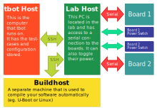

tbot.role¶
Machine-roles as introduced in Roles.
Predefined Roles¶
Here’s a diagram with a rough outline of what each role is for. Note that this is entirely flexible though: E.g. you can use your localhost (= tbot-host) as lab-host or have build-host and lab-host be the same machine just as well!
-
class
tbot.role.LabHost[source]¶ Bases:
tbot.machine.linux.lab.Lab,tbot.role.RoleRole for the “lab-host”.
As shown on the diagram above, the lab-host is the central host from where connections to other machines are made. This can be your localhost in simple cases or any ssh-reachable machine if working remotely.
A machine for this role should be registered by the lab-config. If this is not done, it defaults to a localhost lab-host machine.
Testcases should use the lab-host for any “host” operations if that is at all possible.
-
class
tbot.role.BuildHost[source]¶ Bases:
tbot.machine.linux.build.Builder,tbot.role.RoleRole for the “build-host”.
The build-host is an optional machine for building/compiling software. In simple cases, this can just be the lab-host but when builds are more complex, it can be beneficial to use an external build-server with more CPU-power for this.
Generic testcases for building e.g. U-Boot or Linux should use this machine.
-
class
tbot.role.LocalHost[source]¶ Bases:
tbot.machine.linux.linux_shell.LinuxShell,tbot.role.RoleRole for the localhost or “tbot-host”, the machine tbot is running on.
When using a remote lab-host, sometimes on wants to e.g. download an artifact from the lab-host to the localhost or upload a local file to the lab-host. This machine can be referenced for such purposes.
In most circumstances, it should not be necessary to register a custom machine for this role. It might however be useful for situations where you want to e.g. modify the
workdir()on localhost.
-
class
tbot.role.Board[source]¶ Bases:
tbot.machine.board.board.Board,tbot.role.RoleRole for the DUT (device under test, “the board”) hardware.
As described in Board Config, in tbot, the board is represented by one machine for the “physical device” and separate machines for the software running on it. This role defines the physical hardware and e.g. manages turning on and off board power.
See Board-Hardware Config for more.
-
class
tbot.role.BoardUBoot[source]¶ Bases:
tbot.machine.board.uboot.UBootShell,tbot.role.RoleRole for a U-Boot bootloader machine running on the
tbot.role.Board.See U-Boot Config for details how such a machine should be configured.
-
class
tbot.role.BoardLinux[source]¶ Bases:
tbot.machine.linux.linux_shell.LinuxShell,tbot.role.RoleRole for a Linux OS running on the
tbot.role.Board.There’s multiple ways to configure such a machine. See Linux (without U-Boot) Config or Linux (from U-Boot) Config, depending on what you need.